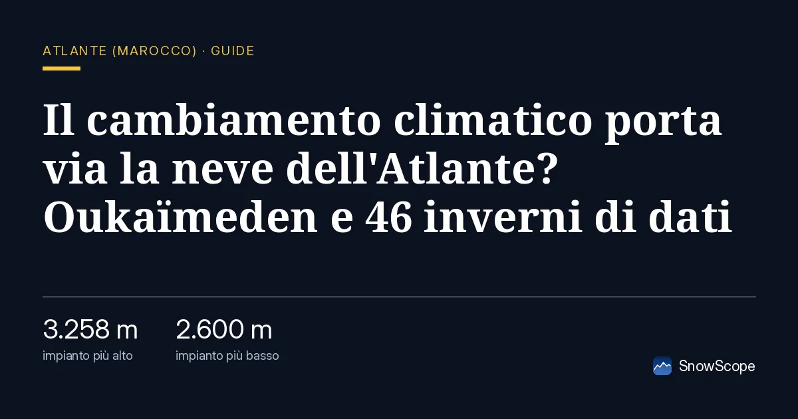

Il cambiamento climatico porta via la neve dell'Atlante? Oukaïmeden e 46 inverni di dati
L'Atlante trattiene la neve in un clima secco dove una sola tempesta può riempire la stagione o un inverno mite può cancellarla. Negli ultimi 46 inverni, un pattern emerge chiaramente sulle vette più alte: la stagione nevosa si sta accorciando. Sopra i 2.500 m, dove si trova Oukaïmeden, gli inverni vedono ora circa 17 giorni in meno con copertura nevosa rispetto a una generazione fa.
Le previsioni neve in tempo reale per Oukaïmeden nell'app SnowScopeAltezza neve, allerte powder e mappa 3D, gratis.
Cosa abbiamo misurato
SnowScope ha esaminato nove località nelle tre aree sciistiche dell'Atlante—Oukaïmeden, Michlifen e Jbel Hebri—da 1.870 m a 3.258 m, coprendo gli inverni dal 1980-81 al 2025-26. Abbiamo contato i giorni di neve (giorni con almeno 5 cm di neve al suolo) e tracciato la neve più profonda di ogni stagione. I dati provengono dalla ricostruzione degli inverni passati corretta per l'altitudine di ogni località.
La neve effettiva in un singolo punto può variare; la polvere sahariana, la deriva del vento e il terreno locale hanno tutti importanza. Ma con 46 inverni e nove punti nelle tre stazioni, emergono chiari pattern generali.
Le vette più alte stanno perdendo la loro stagione
Sopra i 2.500 m, l'inverno tipico aveva 145 giorni di neve nei primi 15 inverni del nostro record e 128 negli ultimi 15—un calo del 12 %. Ancora più significativo, il declino è di circa 8,8 giorni di neve per decennio e mostra lo stesso segnale al ribasso in tutti e tre i punti ad alta quota che abbiamo studiato. La neve più profonda è caduta anche lei, da 102 cm a 92 cm, anche se questo cambiamento è meno certo nei dati.
Perché la vetta lo mostra per prima? Sopra i 2.500 m, la neve rimane spesso per mesi, rendendo facile notare una stagione accorciata. Il sole dell'Atlante è intenso e l'aria secca; qualche grado di calore extra in primavera accorcia notevolmente la stagione. Più in basso, dove la neve difficilmente dura settimane, un tale cambiamento sarebbe invisibile sotto le maggiori fluttuazioni anno dopo anno.
Le quote più basse sono più difficili da leggere
Tra i 1.500 m e i 2.500 m, la neve è scarsa. Un inverno tipico vede solo poche settimane con 5 cm di neve al suolo. Qui il quadro è misto. Il trend suggerisce una perdita di circa 1,7 giorni di neve per decennio, ma il confronto tra i primi 15 inverni e gli ultimi 15 mostra poco cambiamento, e nessun singolo punto raggiunge la soglia per un segnale chiaro. A queste altitudini, poche grandi tempeste plasmano così fortemente ogni inverno che 46 anni di dati non possono ancora separare il cambiamento climatico dalla variabilità naturale.
Nell'Atlante, l'altitudine conta: il confine tra il declino prevedibile e il caos meteorologico si situa intorno ai 2.500 m.
Alcune stagioni sono anomale
Gli inverni dell'Atlante oscillano selvaggiamente. Nelle nove località, le mediane hanno spaziato da soli 4 giorni di neve nel 2023-24 a 100 nel 2008-09. La peggiore stagione dell'intero record di 46 anni è stata recente: il 2023-24. Eppure il 2025-26, che si è concluso pochi mesi prima della registrazione di questi dati, si è classificato tra i cinque più nevosi con 48 giorni di neve. Due dei tre peggiori inverni del record sono degli ultimi quattro anni, ma le stagioni peggiori e migliori sono ancora separate da un fattore di 25.
Cosa guida la neve dell'Atlante
I ricercatori collegano la neve dell'Atlante ai pattern di pressione sull'Atlantico, soprattutto l'Oscillazione Nord Atlantica. Le montagne alimentano l'approvvigionamento idrico a valle: lo scioglimento della neve riempie fiumi e falde freatiche per le pianure di Marrakech. Gli studi prevedono che entro la metà del secolo la valle del Rheraya sotto il Toubkal si riscalderà di 1,4 a 2,6 °C e vedrà il 22 % al 31 % in meno di precipitazioni invernali. Il deflusso fluviale potrebbe calare del 19 % al 63 %, principalmente perché la neve persiste per meno tempo. A scala continentale, il Mediterraneo è una zona calda del cambiamento climatico dove fino al 40 % delle precipitazioni invernali potrebbe scomparire localmente.
Cosa significa per gli sciatori ora
Oukaïmeden rimane l'unica stazione dell'Atlante abbastanza alta per una stagione nevosa affidabile. Il trend mostra che sta diventando meno affidabile, ma su base anno dopo anno puoi comunque trovare buone condizioni. I cambiamenti tempesta per tempesta contano più del cambiamento a lungo termine: controlla SnowScope dopo ogni sistema meteorologico invernale che raggiunge l'Atlante, e pianifica di sciare entro pochi giorni dalla nevicata perché lo scioglimento accade velocemente. Le stazioni più basse come Michlifen dipendono da tempeste fredde che spingono la linea della neve verso il basso; controlla sempre le previsioni prima di andare.
Consigli per sciatori
- Osserva attentamente la mappa neve dal vivo dopo ogni tempesta atlantica che raggiunge l'Atlante; le condizioni cambiano velocemente.
- Vai entro due o tre giorni dalla neve: a queste altitudini, il sole e l'aria secca sciolgono la copertura rapidamente tra le tempeste.
- Oukaïmeden a 2.660 m è l'unica stazione affidabilmente sopra la zona in calo; le aree più basse hanno bisogno di un sistema freddo e umido.
- Prima di andare fuori pista o sul Toubkal, chiedi alle guide alpine locali di neve e rischio di caduta di rocce; il Marocco non ha un bollettino pubblico di valanghe disponibile su SnowScope.
- Negli anni secchi come il 2023-24, l'intera stagione può essere debole; le rocce possono nascondersi sotto una copertura superficiale.
Su questi numeri
Le altezze neve delle località sono la neve più alta sui pendii superiori alla data indicata; sono stime per un'area, non una misura in un punto. Le previsioni possono cambiare. Leggi sempre il bollettino valanghe ufficiale prima del fuoripista.
Cita questo articolo
Per ricerca, didattica o stampa: numeri e grafici sono liberamente riutilizzabili con licenza CC BY 4.0 citando così.
SnowScope (2026), Il cambiamento climatico porta via la neve dell'Atlante? Oukaïmeden e 46 inverni di dati, https://snowscope.app/blog/it/2026/11/atlas-snow-climate-change-oukaimeden-46-winters.html, consultato il 2026-11-09
SnowScope (Atlas Labs). (2026, November 9). Il cambiamento climatico porta via la neve dell'Atlante? Oukaïmeden e 46 inverni di dati. SnowScope snow reports. https://snowscope.app/blog/it/2026/11/atlas-snow-climate-change-oukaimeden-46-winters.html
BibTeX
@misc{snowscope2026atlassnowclimatechangeou,
author = {{SnowScope (Atlas Labs)}},
title = {Il cambiamento climatico porta via la neve dell'Atlante? Oukaïmeden e 46 inverni di dati},
year = {2026},
month = nov,
howpublished = {\url{https://snowscope.app/blog/it/2026/11/atlas-snow-climate-change-oukaimeden-46-winters.html}},
note = {Published 2026-11-09 11:38 UTC; accessed 2026-11-09}
}· CC BY 4.0 · Metodi, dati e strumenti →
Oukaïmeden: neve e temperatura per quota, quest'inverno vs lo scorso (strumenti) →
Segui Oukaïmeden
Gratis: un messaggio quando arriva la neve e il meteo ogni mattina.
Altri bollettini neve

Nella stazione sciistica di Oukaïmeden in Marocco, un tipico 15 dicembre porta solo 16 cm a mezza montagna. SnowScope mostra le probabilità da 46 inverni di dati.

Fin dove è scesa la neve, quando se n'è andata e come questo inverno si confronta con il 2008-09 e con gli anni secchi.